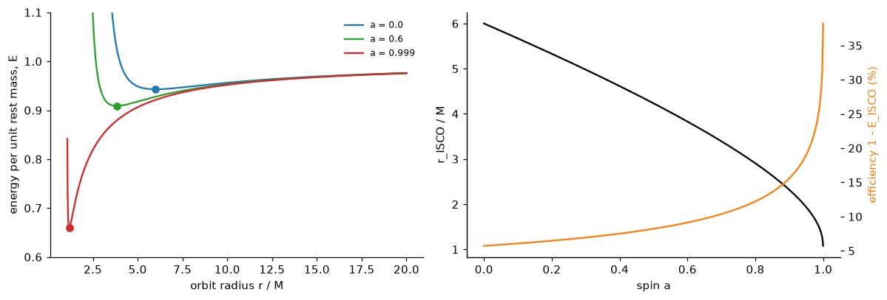
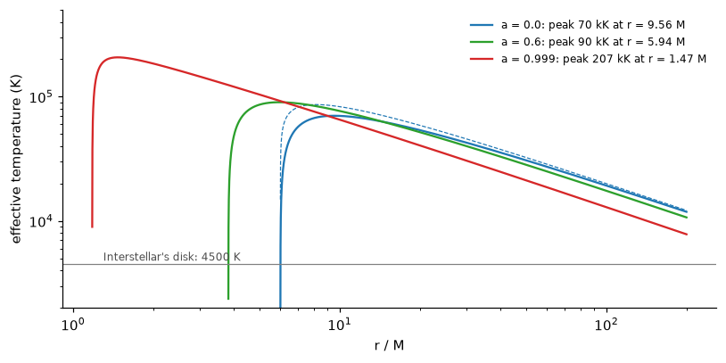
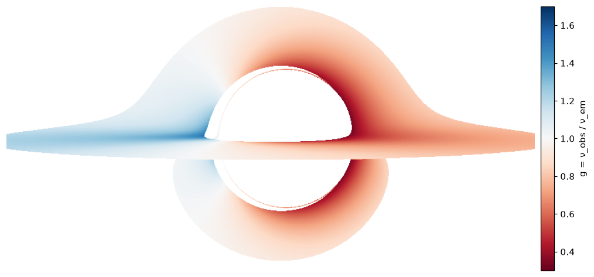
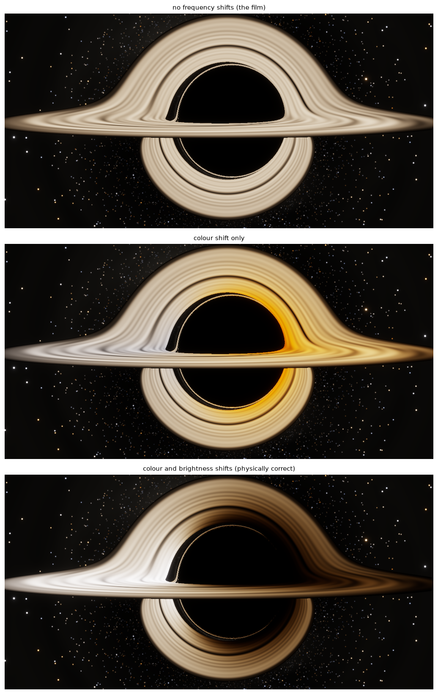
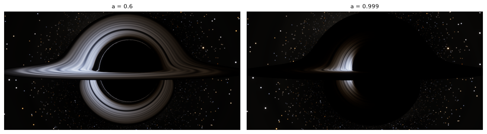

Circular orbits, the innermost stable orbit, disk temperature, gravitational and Doppler shifts, and what a disk really looks like (part 4 of 4)
The physics of a thin accretion disk around a Kerr black hole and how to render it: circular geodesic orbits and the ISCO, the Novikov-Thorne/Page-Thorne flux and temperature, the redshift factor g, Liouville’s theorem and Doppler beaming, blackbody colours, and the choices Interstellar made, all checked numerically.
Light from the disk (this post): orbits, temperature, redshift and Doppler beaming.
The image people remember from Interstellar is not the shadow but the glowing ring of gas wrapped round it. This post covers the physics of that gas and of the light it sends to the camera: where it orbits, how hot it is, and how the hole and the gas’s own motion shift its colour and brightness. Those shifts are the part the film left out.
Show code
import sys, math, warningsfrom pathlib import Pathwarnings.filterwarnings("ignore")ROOT = Path.cwd().resolve().parents[1] /"gargantua"sys.path.insert(0, str(ROOT))import numpy as npimport matplotlib.pyplot as pltfrom blackhole import kerr, render as R, sky as SK, disk as Dfrom blackhole.colour import BlackbodyTable, xyz_to_rgb, tonemap, bloom, planck, chromaticity_rgbplt.rcParams.update({"figure.dpi": 110, "axes.spines.top": False, "axes.spines.right": False})def show(ax, img, title=None): ax.imshow(np.clip(img, 0, 1), interpolation="lanczos") ax.set_axis_off()if title: ax.set_title(title, fontsize=10)# the film's camera, from Figure 13 of James et al. (2015)R_CAM, TH_CAM =74.1, 86.56
Gas on circular orbits
A thin accretion disk is gas orbiting in the hole’s equatorial plane, each ring moving very nearly on a circular geodesic and drifting slowly inwards as friction (in practice magnetic turbulence) carries its angular momentum outwards. For a prograde circular orbit in the Kerr equatorial plane, Bardeen, Press and Teukolsky (1972) give the angular velocity, energy and angular momentum per unit rest mass:
and \(u^t = dt/d\tau = (r^{3/2} + a)\big/\big(r^{3/4}\sqrt{r^{3/2} - 3r^{1/2} + 2a}\big)\). The angular velocity is Kepler’s law with a twist: frame dragging adds \(a\) to \(r^{3/2}\).
Circular orbits exist all the way in to the prograde photon orbit, but they are not all stable. Inside the innermost stable circular orbit (ISCO), the slightest nudge sends the gas plunging into the hole. The ISCO is where \(E(r)\) is at its minimum, and it has a closed form:
The disk’s inner edge sits there. Gas reaching the ISCO has given up \(1 - E_\text{ISCO}\) of its rest-mass energy as heat and light, the radiative efficiency, before it plunges.
Show code
fig, ax = plt.subplots(1, 2, figsize=(11, 3.8))for a, col in [(0.0, "C0"), (0.6, "C2"), (0.999, "C3")]: r_ph = kerr.photon_orbit_radii(a)[0] if a >0else3.0 rr = np.linspace(r_ph *1.02, 20, 2000) ax[0].plot(rr, D.energy(rr, a), color=col, label=f"a = {a}") ri = D.isco(a) ax[0].plot(ri, D.energy(ri, a), "o", color=col)# numerical check: the minimum of E(r) is the closed-form ISCO i = np.argmin(D.energy(rr, a))assertabs(rr[i] - ri) <0.02ax[0].set_ylim(0.6, 1.1)ax[0].set_xlabel("orbit radius r / M")ax[0].set_ylabel("energy per unit rest mass, E")ax[0].legend(frameon=False, fontsize=8)aa = np.linspace(0, 0.9999, 400)ax[1].plot(aa, [D.isco(x) for x in aa], "k", label="ISCO radius (left axis)")ax[1].set_xlabel("spin a")ax[1].set_ylabel("r_ISCO / M")ax2 = ax[1].twinx()ax2.plot(aa, [100* (1- D.energy(D.isco(x), x)) for x in aa], "C1", label="efficiency")ax2.set_ylabel("efficiency 1 - E_ISCO (%)", color="C1")plt.tight_layout()plt.show()for a in [0.0, 0.6, 0.999]:print(f"a = {a:5g}: ISCO {D.isco(a):.4f} M, efficiency {100*(1- D.energy(D.isco(a), a)):.1f}%")eff0 =100* (1- D.energy(6.0, 0.0))eff999 =100* (1- D.energy(D.isco(0.999), 0.999))

Figure 1: Left: the energy per unit mass of circular orbits for three spins; each curve’s minimum (dot) is the ISCO, and orbits inside it are unstable. Right: the ISCO radius and the radiative efficiency 1 - E_ISCO against spin.
a = 0: ISCO 6.0000 M, efficiency 5.7%
a = 0.6: ISCO 3.8291 M, efficiency 9.1%
a = 0.999: ISCO 1.1818 M, efficiency 34.0%
Accretion onto a non-spinning hole releases 5.7% of the rest-mass energy, already about eight times the 0.7% released by fusing hydrogen into helium. At \(a = 0.999\) it releases 34%. This is why accreting black holes, quasars, are the most luminous steady objects in the universe.
How bright, and how hot
Novikov and Thorne (1973) and Page and Thorne (1974) worked out the radiation from such a disk using only conservation laws. Rest mass, energy and angular momentum must all be conserved as gas spirals in, and the torque must vanish at the ISCO, since gas inside it falls freely. These are enough to give the flux of energy radiated from each face of the disk, per unit accretion rate \(\dot M\), without knowing how the friction works:
with \(\sqrt{-g} = r\) in the equatorial plane. Page and Thorne also evaluated the integral in closed form. With \(x = \sqrt r\), \(x_0 = \sqrt{r_\text{ISCO}}\) and \(x_1, x_2, x_3\) the roots of \(x^3 - 3x + 2a = 0\),
Far from the hole this tends to the Newtonian (Shakura–Sunyaev) result \(F = \frac{3\dot M}{8\pi r^3}\left(1 - \sqrt{r_\text{ISCO}/r}\right)\). Both the closed form and the limit can be checked against the integral directly:
Show code
print(f"{'a':>6}{'r':>8}{'closed form':>13}{'quadrature':>13}{'rel. diff':>10}{'Newtonian':>12}")worst =0for a in [0.0, 0.6, 0.999]: ri = D.isco(a)for r in [ri *1.05, ri *2, 10.0, 30.0, 300.0]: Fc, Fq, Fn =float(D.flux(r, a)), float(D.flux_numeric(r, a)[0]), float(D.flux_newtonian(r, ri)) worst =max(worst, abs(Fc - Fq) / Fq)print(f"{a:6g}{r:8.3f}{Fc:13.6e}{Fq:13.6e}{abs(Fc-Fq)/Fq:10.1e}{Fn:12.4e}")
Table 1: The Page-Thorne flux per unit accretion rate: closed form against direct quadrature of the conservation-law integral, and the Newtonian formula.
The closed form and the quadrature agree to 1e-08.
The disk is optically thick, so each face radiates like a blackbody at the effective temperature\(\sigma T^4 = F\). Restoring units, \(F\) above is in units of \(\dot M c^2/(GM/c^2)^2\), so the temperature depends on the hole’s mass and the accretion rate. Here it is for a hole of Gargantua’s mass, \(10^8\) Suns, accreting at a tenth of the Eddington rate (the rate at which radiation pressure would balance gravity), a typical value for a bright quasar:
Show code
G, c, M_sun, sigma_sb =6.674e-11, 2.998e8, 1.989e30, 5.670e-8M =1e8* M_sunr_g = G * M / c**2L_edd =1.26e31*1e8# W, for 10^8 solar massesfig, ax = plt.subplots(figsize=(7.5, 3.8))T_peak = {}for a, col in [(0.0, "C0"), (0.6, "C2"), (0.999, "C3")]: eta =1- D.energy(D.isco(a), a) Mdot =0.1* L_edd / (eta * c**2) rr = np.geomspace(D.isco(a) *1.0001, 200, 3000) T = (D.flux(rr, a) * Mdot * c**2/ r_g**2/ sigma_sb) **0.25 T_peak[a] = (T.max(), rr[T.argmax()]) ax.loglog(rr, T, color=col, label=f"a = {a}: peak {T.max()/1e3:.0f} kK at r = {rr[T.argmax()]:.2f} M")if a ==0.0: Tn = (D.flux_newtonian(rr, 6.0) * Mdot * c**2/ r_g**2/ sigma_sb) **0.25 ax.loglog(rr, Tn, "C0--", lw=0.8)ax.axhline(4500, color="0.5", lw=0.8)ax.text(1.3, 4800, "Interstellar's disk: 4500 K", fontsize=8, color="0.3")ax.set_xlabel("r / M")ax.set_ylabel("effective temperature (K)")ax.set_ylim(2e3, 5e5)ax.legend(frameon=False, fontsize=8)plt.tight_layout()plt.show()

Figure 2: Effective temperature across the disk for a 10⁸-solar-mass hole accreting at 10% of the Eddington rate, for three spins. Faster spin moves the inner edge in and makes the inner disk far hotter. Dashed: the Newtonian profile for a = 0.
A real disk round a hole of Gargantua’s mass would peak at around 90 thousand kelvin for \(a = 0.6\), radiating mostly in the far ultraviolet, with a tail into soft X-rays. That is lethal for anyone nearby, which is a problem for a story with a habitable planet in orbit. So the film’s disk was deliberately anaemic. As the DNGR paper describes it, it was an artist’s disk, “not currently accreting onto the black hole”, that “has cooled to a position-independent temperature \(T = 4500\,\text{K}\), at which it emits a black-body spectrum.” The renders below use that disk, a single temperature everywhere, except where they say otherwise.
The frequency shift \(g\)
The light that reaches the camera is not the light the gas emitted. Two effects change its frequency:
gravitational redshift: the photon climbs out of the hole’s potential;
Doppler shift: the gas moves at up to half the speed of light, towards the camera on one side and away on the other.
General relativity handles both at once. A photon with 4-momentum \(p\) has frequency \(-p\cdot u\) measured by an observer with 4-velocity \(u\). The ray’s conserved quantities give \(p\) everywhere. With \(p_t = -1\) and \(p_\phi = b\), a gas element with \(u = u^t(1, 0, 0, \Omega)\) measures
All of the physics is in two numbers per ray: the radius where it left the disk, and its \(b\). The factor \(1/u^t\) is the time dilation of the orbiting gas, gravitational and kinematic together, and \(1 - \Omega b\) is the Doppler term. Gas moving towards the camera emits photons with \(b < 0\) relative to its motion, so the term is larger than 1 and \(g\) grows.
Show code
a =0.6tr = R.trace_image(R_CAM, TH_CAM, a, 800, 400, 30, ss=2, disk=True, r_out=20)hit = tr["outcome"] == kerr.DISKg_img = R.downsample(np.where(hit, tr["g"], np.nan)[..., None], 2)[..., 0]fig, ax = plt.subplots(figsize=(10, 4.4))im = ax.imshow(g_img, cmap="RdBu", vmin=0.3, vmax=1.7)ax.set_axis_off()cb = plt.colorbar(im, ax=ax, fraction=0.025, pad=0.01)cb.set_label("g = ν_obs / ν_em")plt.tight_layout()plt.show()g_hit = tr["g"][hit]r_hit = tr["r_hit"][hit]print(f"g ranges from {g_hit.min():.2f} to {g_hit.max():.2f}")_, _, _, alpha_i, omega_i, varpi_i = kerr.metric_functions(D.isco(a), np.pi /2, a)v_isco = varpi_i * (D.omega(D.isco(a), a) - omega_i) / alpha_iprint(f"gas speed at the ISCO relative to the ZAMO: {v_isco:.2f}c")for r in [D.isco(a), 6.0, 10.0, 20.0]:print(f"time-dilation factor 1/u^t at r = {r:5.2f}: {1/D.u_t(r, a):.3f}")g_lo, g_hi = g_hit.min(), g_hit.max()

Figure 3: The redshift factor g for every ray that reaches the disk, for the film’s geometry (a = 0.6, camera at 74.1 M, 3.44° above the disk plane). The left side of the disk moves towards the camera (blue, g > 1); the right side moves away (red, g < 1). The image of the far side of the disk, arching over the shadow, carries the same pattern.
g ranges from 0.33 to 1.51
gas speed at the ISCO relative to the ZAMO: 0.58c
time-dilation factor 1/u^t at r = 3.83: 0.568
time-dilation factor 1/u^t at r = 6.00: 0.733
time-dilation factor 1/u^t at r = 10.00: 0.843
time-dilation factor 1/u^t at r = 20.00: 0.923
The shifts are large. Light from the approaching side arrives up to 1.5 times its emitted frequency, and from the receding side as little as 0.33 times. The DNGR paper quotes factors “of order 1.5 and 0.4” for the same disk, combining the Doppler shifts of gas moving at about \(0.55c\) with a gravitational redshift of about 20 per cent. The table of \(1/u^t\) above shows where that 20 per cent comes from: gas at \(r \approx 10\,M\) ticks 16 per cent slow.
Brightness: Liouville’s theorem
A frequency shift also changes brightness, through one of the most useful facts in relativistic radiative transfer. Along a ray in vacuum the photon distribution function is conserved (Liouville’s theorem), and in terms of the specific intensity \(I_\nu\) that means
\[
\frac{I_\nu}{\nu^3} \;\text{ is the same for every observer along the ray.}
\]
So the camera sees \(I_{\nu}^\text{obs} = g^3\,I^\text{em}_{\nu/g}\). For a blackbody that has a remarkably tidy consequence. Planck’s law is \(B_\nu(T) = \frac{2h\nu^3/c^2}{e^{h\nu/kT} - 1}\), so
A shifted blackbody is a blackbody at temperature \(gT\). Integrated over frequency, the brightness scales as \(g^4\), so a factor of 1.5 makes the approaching side five times brighter, and a factor of 0.4 makes the receding side forty times dimmer. Numerically:
Show code
nu = np.geomspace(1e13, 3e15, 2000)h, kB =6.62607015e-34, 1.380649e-23def B_nu(nu, T):return2* h * nu**3/ c**2/ np.expm1(h * nu / (kB * T))T0 =4500.0for g in [0.4, 1.5]: lhs = g**3* B_nu(nu / g, T0) rhs = B_nu(nu, g * T0) bol = np.trapezoid(lhs, nu) / np.trapezoid(B_nu(nu, T0), nu)print(f"g = {g}: max |g^3 B(nu/g, T) / B(nu, gT) - 1| = {np.max(np.abs(lhs/rhs -1)):.1e};"f" bolometric ratio {bol:.3f} vs g^4 = {g**4:.3f}")
g = 0.4: max |g^3 B(nu/g, T) / B(nu, gT) - 1| = 1.5e-14; bolometric ratio 0.026 vs g^4 = 0.026
g = 1.5: max |g^3 B(nu/g, T) / B(nu, gT) - 1| = 6.9e-15; bolometric ratio 5.063 vs g^4 = 5.062
This is why the renderer’s disk shading is one line: look up the colour and brightness of a blackbody at \(g\,T\).
From spectrum to colour
What colour is a blackbody? The eye’s response is summarised by the CIE 1931 colour-matching functions, three weighting curves \(\bar x, \bar y, \bar z\) that turn a spectrum into tristimulus values \(X, Y, Z\), with \(Y\) the luminance. A fixed matrix takes those to the linear RGB of a standard sRGB display, whose white point is a 6500 K daylight spectrum. The DNGR team made the same choice, setting the virtual camera’s white balance so that a 6500 K blackbody comes out neutral, though they used the sensitivity curves of motion-picture film rather than the eye’s.
Figure 4: Blackbody colours on an sRGB display (normalised to equal luminance), with the film’s 4500 K disk and the range of temperatures its gas appears to have once Doppler and gravitational shifts are included (g T, for the g range above). Below: relative luminance against temperature; across that range the visible brightness changes by a factor of several hundred thousand.
Visible luminance changes even faster with temperature than bolometric brightness does, because cooling shifts the peak out of the visible band into the infrared. Between the reddest and bluest parts of the disk above, the visible luminance differs by a factor of about 610,000. The gas itself, at the ISCO, moves at 0.58c relative to the local ZAMO.
Where the disk’s images come from
Before adding colour, it helps to see the geometry. The DNGR paper does this with a “paint-swatch” disk, coloured bands from \(9.26\,M\) to \(18.70\,M\) round a hole with \(a = 0.999\), seen by a camera at \(r = 74.1\,M\), \(3.44°\) above the disk plane (their Figure 13). Here is the same set-up:
Figure 5: A paint-swatch disk (inner radius 9.26 M, outer 18.70 M) around a hole with a = 0.999, seen from r = 74.1 M just above the disk plane (compare Figure 13 of James et al. 2015). Coloured bands mark radius; white wedges mark three azimuths. The light from the top face of the far side of the disk arches over the shadow; light from the underside, travelling under the hole, forms the ring below it; and a thin third image of the top face hugs the shadow’s edge. The flattened left edge of the shadow is the spin.
The disk as the film showed it, and as it would look
Now the film’s disk: \(a = 0.6\), a uniform 4500 K blackbody from the ISCO outwards with a soft outer edge, the same camera, and a procedural streak texture standing in for the artists’ turbulent gas. The DNGR paper shows the effect of the frequency shifts in two steps (their Figure 15), and so does this figure:
no shifts: every ray shows the gas’s own 4500 K colour and brightness, as in the film;
colour only: the colour of a blackbody at \(gT\), rescaled to the unshifted brightness with the weighting DNGR used, \(0.30R + 0.59G + 0.11B\);
colour and brightness: the full blackbody at \(gT\), as an observer would actually see it.
Show code
a =0.6tr = R.trace_image(R_CAM, TH_CAM, a, 960, 480, 30, ss=2, disk=True, r_out=20)fig, axs = plt.subplots(3, 1, figsize=(10, 15))for ax, (shift, title) inzip(axs, [("none", "no frequency shifts (the film)"), ("colour", "colour shift only"), ("full", "colour and brightness shifts (physically correct)")]): img, _ = R.compose(tr, a, 2, sky=milky, stars=stars, star_gain=0.6, disk=dict(model="film", T=4500, shift=shift, r_out=20), exposure=0.35) show(ax, img, title)plt.tight_layout()plt.show()

Figure 6: Interstellar’s disk (a = 0.6, uniform 4500 K) seen from the film’s camera position, (top) without frequency shifts, as in the film; (middle) with the Doppler and gravitational colour shift but not the brightness change; (bottom) with both, the disk as it would truly look. Compare Figure 15 of James et al. (2015).
The bottom image is lopsided: the approaching left side blazes white, tinged with blue, and the receding right side fades to a dim red-brown. The shadow, with the far side of the disk arched over it, is harder to read. The DNGR paper explains why the film used the top image: a fully realistic disk, “exceedingly lopsided, with the hole’s shadow barely discernible, was obviously unacceptable” for a film. The same asymmetry is real and observed. It is why the Event Horizon Telescope’s ring round M87* is brighter on one side.
A real disk
Finally, drop the film’s simplifications altogether: the Novikov–Thorne temperature profile instead of a uniform 4500 K, peaking at 9000 K so that it stays in the visible (a real quasar disk would be ten times hotter and mostly ultraviolet), with full frequency shifts, for the film’s spin and for Gargantua’s story spin.
Show code
fig, axs = plt.subplots(1, 2, figsize=(12, 3.4))for ax, a inzip(axs, [0.6, 0.999]): trr = R.trace_image(R_CAM, TH_CAM, a, 640, 320, 30, ss=2, disk=True, r_out=20) _, lin = R.compose(trr, a, 2, sky=milky, stars=stars, star_gain=0.6, disk=dict(model="novikov-thorne", T=9000, shift="full", r_out=20), glare=False)# expose each panel for its own brightest pixels lum = lin @ np.array([0.2126, 0.7152, 0.0722]) img = tonemap(bloom(lin), 0.6/ np.percentile(lum, 99.9)) show(ax, img, f"a = {a}")plt.tight_layout()plt.savefig("thumbnail.png", dpi=80, bbox_inches="tight", pad_inches=0)plt.show()

Figure 7: A Novikov-Thorne disk, temperature falling outwards from a peak of 9000 K, with Doppler and gravitational shifts, seen from the film’s camera position. Left: a = 0.6, as rendered in the film. Right: a = 0.999, close to Gargantua’s spin in the story. At high spin the disk’s inner edge moves in towards the horizon, where the gas moves fastest and the light is shifted most. Each panel is exposed for its own brightest pixels.
Two things stand out. At \(a = 0.6\) the hotter disk is far less lopsided than the film’s 4500 K one, even though the shifts are the same. At 9000 K the visible band lies closer to the Rayleigh–Jeans side of the Planck curve, where brightness at a fixed frequency grows roughly in proportion to temperature rather than exponentially, so a factor \(g\) in temperature makes much less difference to what the eye sees. At \(a = 0.999\) almost all the light comes from the inner disk on the approaching side. The rest of the disk is cool and dim, and it blocks the stars behind it.
That completes the chain from Einstein’s equations to a picture: geodesics bend the light (part 1), a camera and a sky turn that bending into an image (part 2), spin and frame dragging reshape it (part 3), and the disk’s orbits, temperature and frequency shifts give it its colour. The main post puts them together at full resolution.
References
Bardeen, J. M., Press, W. H. and Teukolsky, S. A. (1972). Rotating black holes: locally nonrotating frames, energy extraction, and scalar synchrotron radiation. Astrophysical Journal 178, 347–369.
Novikov, I. D. and Thorne, K. S. (1973). Astrophysics of black holes. In Black Holes (Les Houches 1972), eds. C. DeWitt and B. S. DeWitt, 343–450. Gordon and Breach.
Page, D. N. and Thorne, K. S. (1974). Disk-accretion onto a black hole. Time-averaged structure of accretion disk. Astrophysical Journal 191, 499–506.
Shakura, N. I. and Sunyaev, R. A. (1973). Black holes in binary systems. Observational appearance. Astronomy and Astrophysics 24, 337–355.
Luminet, J.-P. (1979). Image of a spherical black hole with thin accretion disk. Astronomy and Astrophysics 75, 228–235.
Rybicki, G. B. and Lightman, A. P. (1979). Radiative Processes in Astrophysics, section 4.9 (invariance of \(I_\nu/\nu^3\)). Wiley.
Wyman, C., Sloan, P.-P. and Shirley, P. (2013). Simple analytic approximations to the CIE XYZ color matching functions. Journal of Computer Graphics Techniques 2(2), 1–11.
James, O., von Tunzelmann, E., Franklin, P. and Thorne, K. S. (2015). Gravitational lensing by spinning black holes in astrophysics, and in the movie Interstellar. Classical and Quantum Gravity 32, 065001. arXiv:1502.03808.
Event Horizon Telescope Collaboration (2019). First M87 Event Horizon Telescope results. I. The shadow of the supermassive black hole. Astrophysical Journal Letters 875, L1.